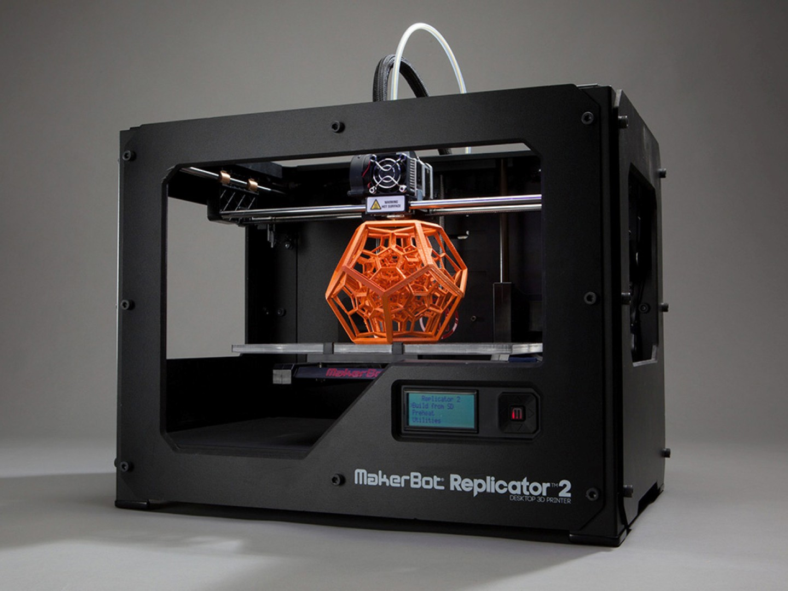
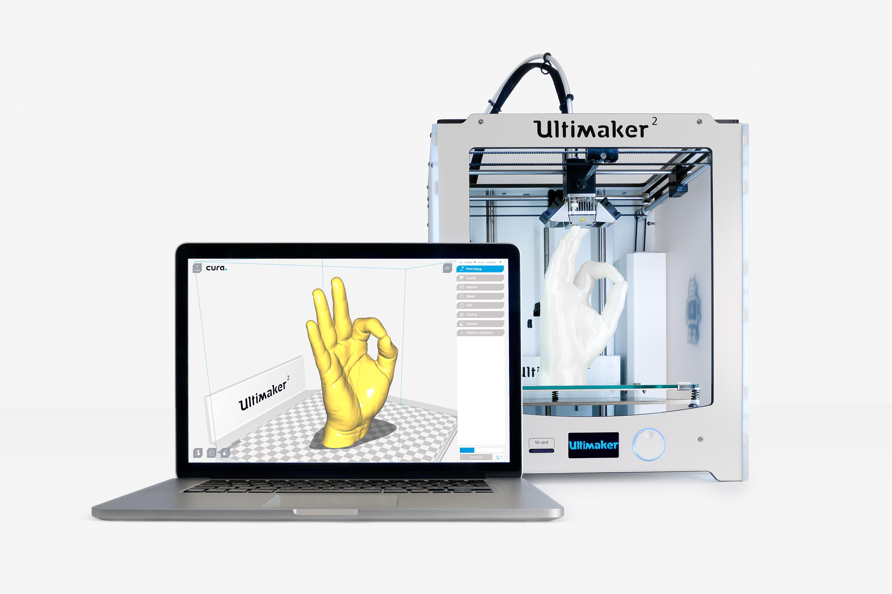
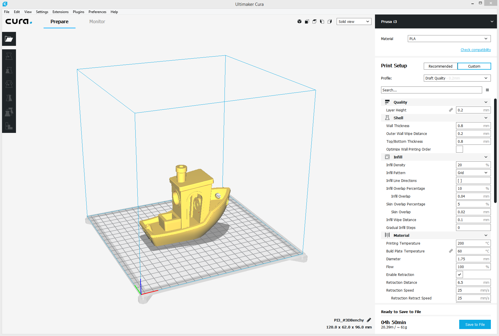
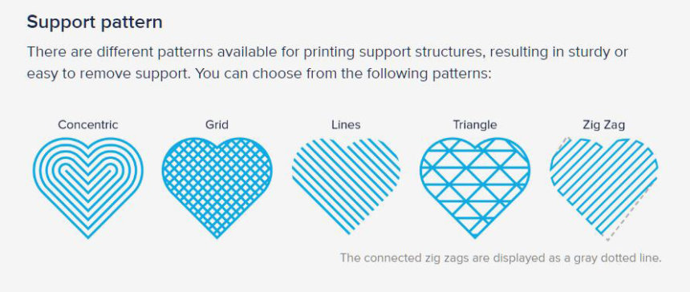

Introduction to 3D Printing

A 3D printer is a cutting-edge device that fabricates three-dimensional objects from digital models by layering materials such as plastic, metal, or resin. It operates by depositing successive layers of material, gradually building up the final object. This revolutionary technology enables rapid prototyping, customized manufacturing, and intricate designs that were once unimaginable. From industrial production to hobbyist creations, 3D printing has transformed various industries, offering efficiency, versatility, and creativity in manufacturing processes.
Software for 3D Printing: Cura
Cura is one of the most popular open-source slicing software used in 3D printing. It is developed by Ultimaker and supports a wide range of 3D printers. Key features of Cura include:
• Slicing: Cura slices the digital 3D model into thin layers and generates the G-code instructions required by the 3D printer to build the object layer by layer.
• Customization: Users can customize print settings such as layer height, infill density, print speed, and supports to optimize print quality and efficiency.
• Preview: Cura provides a visual preview of the sliced model, allowing users to inspect each layer and identify potential issues before printing. 
Commands in Cura
1. Import Model:
• Users can import 3D models in various file formats such as STL, OBJ, and AMF into Cura for slicing and printing.
2. Slice Model:
• Cura slices the imported model into layers based on user-defined settings, generating the G-code necessary for printing.
3. Adjust Print Settings:
• Users can customize print settings such as layer height, infill density, print speed, and support structures to achieve desired print quality and performance.
4. Preview and Analyze:
• Cura provides a visual preview of the sliced model, allowing users to analyze each layer and detect potential issues such as overhangs, warping, or gaps.
5. Export G-code:
• Once satisfied with the settings and preview, users can export the sliced model as G-code to be loaded onto the 3D printer for printing.
Designing in Cura
While Cura primarily serves as slicing software, users can also perform basic model adjustments and modifications within the software. However, for more advanced design capabilities, dedicated CAD (Computer-Aided Design) software such as Blender, Fusion 360, or Tinkercad is recommended.

Supports in 3D Printing
What are Supports?
In 3D printing, supports are temporary structures that are added to the print to provide stability and prevent sagging or collapsing of overhanging or complex features during the printing process. Supports are essential for ensuring the successful fabrication of intricate designs that include overhangs, bridges, or steep angles.
Importance of Supports
• Maintaining Structural Integrity: Supports help maintain the structural integrity of the printed object by providing a scaffold for overhanging or unsupported regions.
• Preventing Deformation: Without supports, overhanging features may sag or collapse during printing, resulting in deformities or print failures.
Heating Effects and Cooling Effects
1. Heating Effects:
• During the 3D printing process, certain printing technologies involve heating the printing material (e.g., thermoplastic filaments) to their melting point to facilitate layer adhesion and deposition.
2. Cooling Effects:
• After each layer is deposited, cooling fans or other cooling mechanisms are often used to rapidly cool the material, preventing deformation and ensuring dimensional accuracy.
Tpes of 3D printer

3D printers come in various types, each utilizing different technologies and materials. Here are some common types:
1. Fused Deposition Modeling (FDM)/Fused Filament Fabrication (FFF):
• FDM printers are the most common and affordable type.
• They work by melting a thermoplastic filament and extruding it layer by layer to create the object.
• Widely used for hobbyists, prototyping, and some industrial applications.
2. Stereolithography (SLA):
• SLA printers use a vat of liquid resin and a UV laser to solidify the resin layer by layer.
• Capable of producing high-resolution prints with smooth surface finishes.
• Commonly used in applications requiring intricate details, such as jewelry or dental models.
3. Digital Light Processing (DLP):
• Similar to SLA, DLP printers use a light source (usually a projector) to solidify liquid resin.
• DLP printers can be faster than SLA because they cure entire layers at once using a projected image.
4. Selective Laser Sintering (SLS):
• SLS printers use a laser to sinter powdered material, typically nylon or other thermoplastics, layer by layer.
• They don't require support structures since the unsintered powder provides support.
• Widely used in industrial settings for producing functional prototypes, end-use parts, and complex geometries.
5. Selective Laser Melting (SLM) and Direct Metal Laser Sintering (DMLS):
• These printers use a high-powered laser to melt and fuse metallic powders layer by layer.
• Commonly used in aerospace, automotive, and medical industries for producing metal parts with high precision and strength.
6. Binder Jetting:
• Binder Jetting printers deposit a binding agent onto a powder bed, layer by layer, solidifying the powder to create the desired object.
• After printing, the object is usually sintered to strengthen it further.
• Used for producing metal, ceramic, and composite parts with complex geometries.
7. Material Jetting:
• Material Jetting printers work similarly to inkjet printers but deposit droplets of photopolymer that are instantly cured with UV light.
• They can produce multi-material and full-color prints with high resolution.
• Suitable for applications requiring fine details and color accuracy, such as architectural models and prototypes.
These are some of the main types of 3D printers, each with its own advantages, limitations, and applications.
Inserting Designs into the Printer
1. Prepare G-code:
• After slicing the 3D model in slicing software like Cura, the resulting G-code file is transferred to a removable storage device such as an SD card or USB drive.
2. Insert Storage Device:
• The storage device containing the G-code file is inserted into the 3D printer's interface, usually located on the printer's control panel.
3. Select File:
• Using the printer's interface, users navigate to the desired G-code file and select it for printing.
4. Start Printing:
• Once the file is selected, users can initiate the printing process directly from the printer's interface.